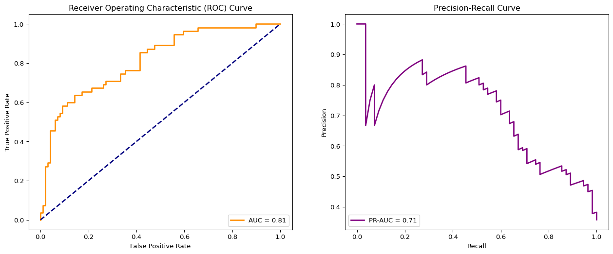

pip install -U scikit-learn
pip install -U kaggle
pip install -U kagglehubClassification Metrics Explained | Sensitivity, Precision, AUROC, & More
install pacakge
load pacakge
import matplotlib.pyplot as plt
import numpy as np
import os
import pandas as pd
import seaborn as sns
#from kaggle.api.kaggle_api_extended import KaggleApi
from sklearn.model_selection import train_test_split
from sklearn.linear_model import LogisticRegression
from sklearn.metrics import (
precision_score, recall_score, roc_curve,
accuracy_score, f1_score, roc_auc_score,
average_precision_score, confusion_matrix,
precision_recall_curve
)download data from kaggle
import kagglehub
# Download latest version
kagglehub.dataset_download("uciml/pima-indians-diabetes-database")
path = kagglehub.dataset_download("uciml/pima-indians-diabetes-database")
print("Path to dataset files:", path)Path to dataset files: /Users/jinchaoduan/.cache/kagglehub/datasets/uciml/pima-indians-diabetes-database/versions/1show data file under download folder
import os
os.listdir(path)['diabetes.csv']read data
df = pd.read_csv(path+'/'+os.listdir(path)[0])
df.head()| Pregnancies | Glucose | BloodPressure | SkinThickness | Insulin | BMI | DiabetesPedigreeFunction | Age | Outcome | |
|---|---|---|---|---|---|---|---|---|---|
| 0 | 6 | 148 | 72 | 35 | 0 | 33.6 | 0.627 | 50 | 1 |
| 1 | 1 | 85 | 66 | 29 | 0 | 26.6 | 0.351 | 31 | 0 |
| 2 | 8 | 183 | 64 | 0 | 0 | 23.3 | 0.672 | 32 | 1 |
| 3 | 1 | 89 | 66 | 23 | 94 | 28.1 | 0.167 | 21 | 0 |
| 4 | 0 | 137 | 40 | 35 | 168 | 43.1 | 2.288 | 33 | 1 |
df.Outcome.value_counts()Outcome
0 500
1 268
Name: count, dtype: int64# separate features from response
X = df.drop('Outcome', axis=1)
y = df['Outcome']# split data into test and training sets
X_train, X_test, y_train, y_test = train_test_split(X, y, test_size=0.2, random_state=42)# initialize and train logistic regression model
model = LogisticRegression(max_iter=1000)
model.fit(X_train, y_train)LogisticRegression(max_iter=1000)In a Jupyter environment, please rerun this cell to show the HTML representation or trust the notebook.
On GitHub, the HTML representation is unable to render, please try loading this page with nbviewer.org.
LogisticRegression(max_iter=1000)
# predict on the test set and get the probas
y_pred = model.predict(X_test)
y_pred_proba = model.predict_proba(X_test)[:, 1] # quickly look at the distribution of the probas
percentiles = np.percentile(y_pred_proba, [5, 25, 50, 75, 95])
percentilesarray([0.03455652, 0.11989883, 0.29954411, 0.64776581, 0.87083353])confusion matrix
# generate confusion matrix
cm = confusion_matrix(y_test, y_pred)
plt.figure(figsize=(8, 6))
sns.heatmap(cm, annot=True, fmt='d', cmap='Blues', cbar=False)
plt.title('Confusion Matrix')
plt.xlabel('Predicted Labels')
plt.ylabel('True Labels')
plt.xticks([0.5, 1.5], ['No Diabetes', 'Diabetes'])
plt.yticks([0.5, 1.5], ['No Diabetes', 'Diabetes'], va='center')
plt.show()# recall / sensitivity
recall = recall_score(y_test, y_pred)
recall0.6727272727272727# precision / positive predictive value
precision = precision_score(y_test, y_pred)
precision0.6379310344827587# specificity
tn, fp, fn, tp = confusion_matrix(y_test, y_pred).ravel()
specificity = tn / (tn + fp)
specificitynp.float64(0.7878787878787878)# accuracy
accuracy = accuracy_score(y_test, y_pred)
accuracy0.7467532467532467# f1
f1 = f1_score(y_test, y_pred)
f10.6548672566371682# get ROC curve values
fpr, tpr, thresholds_roc = roc_curve(y_test, y_pred_proba)
# get PR curve values
precision, recall, thresholds_pr = precision_recall_curve(y_test, y_pred_proba)
# get areas under the curves
auroc = roc_auc_score(y_test, y_pred_proba)
pr_auc = average_precision_score(y_test, y_pred_proba)# plot both curves
fig, (ax1, ax2) = plt.subplots(1, 2, figsize=(16, 6))
ax1.plot(fpr, tpr, color='darkorange', lw=2, label=f'AUC = {auroc:.2f}')
ax1.plot([0, 1], [0, 1], color='navy', lw=2, linestyle='--')
ax1.set_xlabel('False Positive Rate')
ax1.set_ylabel('True Positive Rate')
ax1.set_title('Receiver Operating Characteristic (ROC) Curve')
ax1.legend(loc="lower right")
# Plot Precision-Recall Curve
ax2.plot(recall, precision, color='purple', lw=2, label=f'PR-AUC = {pr_auc:.2f}')
ax2.set_xlabel('Recall')
ax2.set_ylabel('Precision')
ax2.set_title('Precision-Recall Curve')
ax2.legend(loc="lower left")
plt.show()
y_test.value_counts()Outcome
0 99
1 55
Name: count, dtype: int64Reference
https://www.youtube.com/watch?v=KdUrfY1yM0w
https://github.com/RichardOnData/YouTube/blob/main/Python%20Notebooks/classification_metrics.ipynb